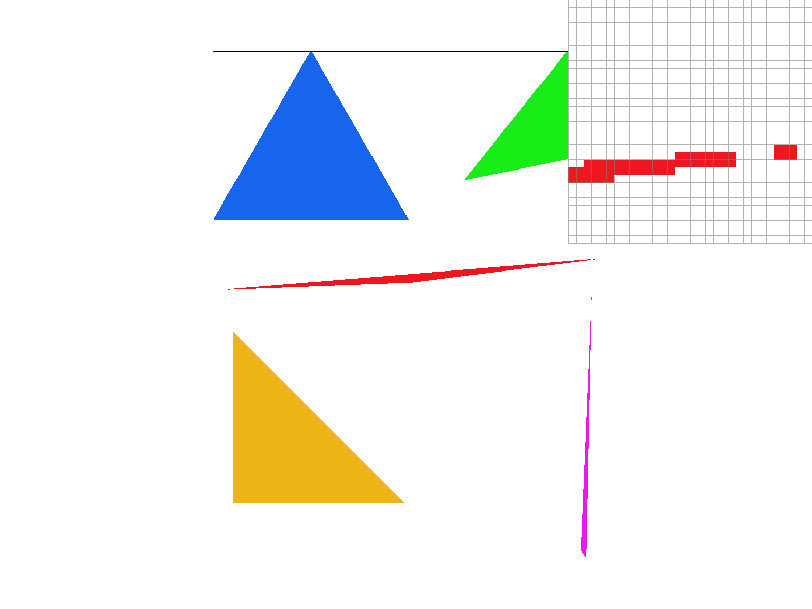
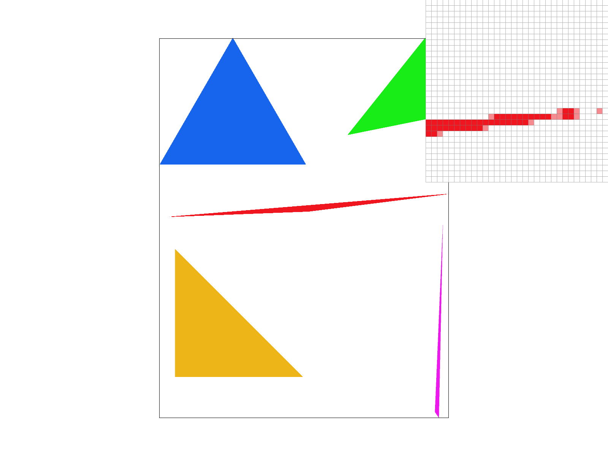
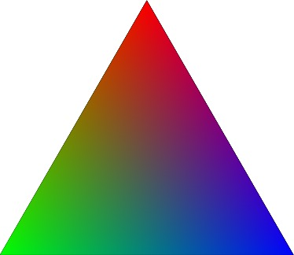
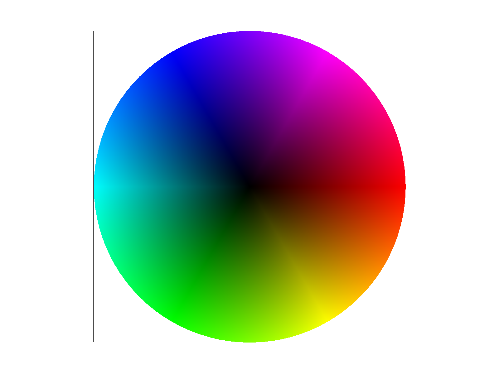
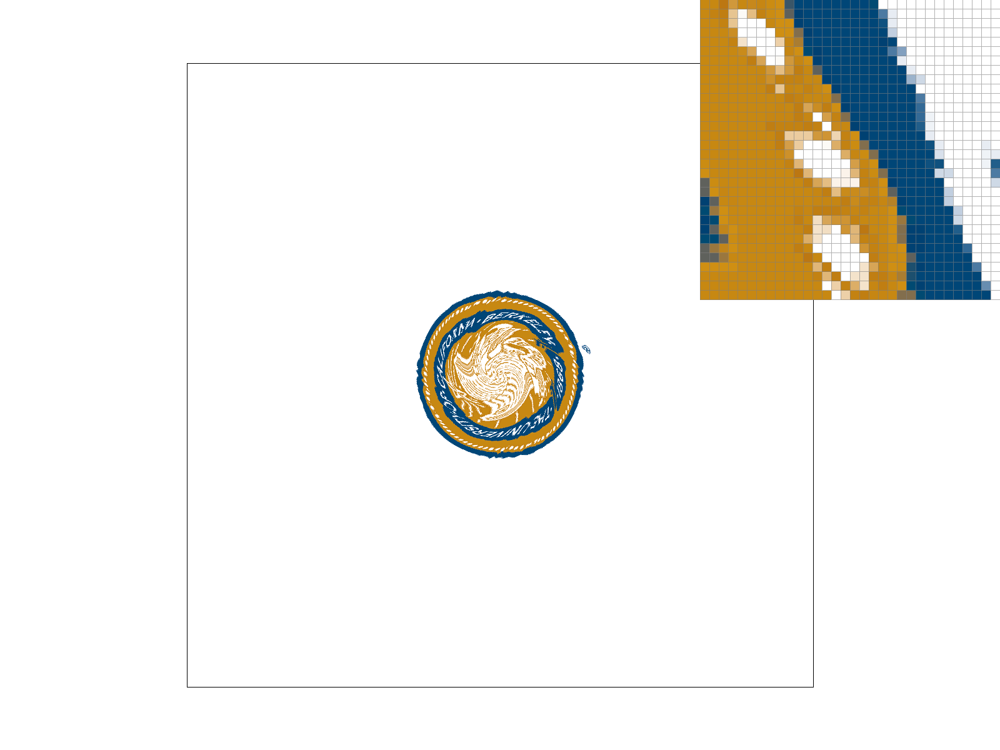
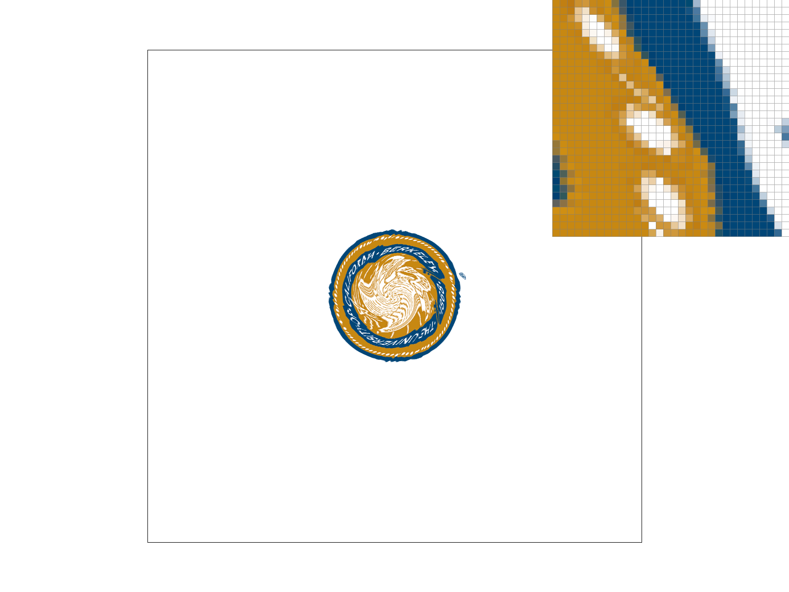
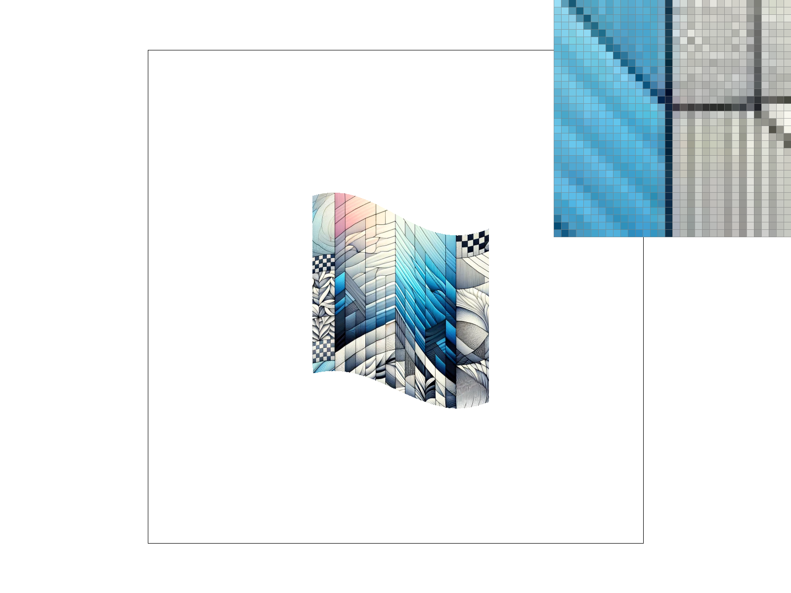

We built a simple rasterizer capable of handling various key features of vector graphics rendering. This involved drawing triangles, implementing supersampling for antialiasing, applying hierarchical transforms, and conducting texture mapping with antialiasing. Through these tasks, we created a rasterizer that had functionality of multiple mipmap models, pixel sampling models, and levels of supersampling. It also was able to render texture and affine transforms.
First, we calculate the bounding box of the triangle. The bounding box is the smallest rectangle that fully contains the triangle. This is done by finding the min and max x and y coordinates (minX, maxX, minY, maxY) of the triangle's vertices (x0, y0, x1, y1, x2, y2). This step allows us to limit our checks to a subset of the screen, significantly reducing the number of pixels we need to process.
Next, we iterate over every pixel within this bounding box. For each pixel, we calculate a point (sampleX, sampleY) that represents the center of the pixel. This is done by adding 0.5 to both the x and y coordinates of the pixel's top-left corner. The reason for sampling at the center is to increase the accuracy of our inside-triangle check, especially for small or thin triangles.
For each sample point, we evaluate it against three edge functions corresponding to the edges of the triangle. These edge functions are calculated as follows:
line0 for the edge from vertex 0 to vertex 1line1 for the edge from vertex 1 to vertex 2line2 for the edge from vertex 2 to vertex 0The edge function (x2 - x1) * (sampleY - y1) - (y2 - y1) * (sampleX - x1) gives a positive value if the point (sampleX, sampleY) is on one side of the line extending from (x1, y1) to (x2, y2), and a negative value if it's on the other side. The exact side (left or right) depends on the order of the vertices.
A pixel's center is considered to be inside the triangle if it is on the same side of all three edges. This is determined by checking if all three edge functions return values that are either all non-negative or all non-positive. If this condition is met, the pixel is inside the triangle and should be filled with the triangle's color.
To incorporate supersampling into the rasterization pipeline, we modified:
sample_rate. This requires generating multiple sample points for each pixel to reduce aliasing effects.sample_buffer, is used to store color values for each sample rather than just each pixel.sample_rate and positioning each sample at the center of its grid cell.Our supersampling algorithm involved the following steps:
sample_buffer.Supersampling is useful for several reasons:
When applied to triangle rasterization, supersampling effectively antialiases triangle edges by more accurately determining pixel coverage. This method smooths the edges of triangles, eliminating jagged edges. The averaging of colors within each pixel leads to a gradient effect at the edges, blending the triangle's color with the background and creating an antialiasing effect.
|

|

|
|
|
|
Comparing screenshots of basic/test4.svg with varying sample rates (1, 4, 9, and 16) highlights the impact of supersampling on image quality, especially along the edges of thin shapes. With a sample rate of 1, aliasing is pronounced, resulting in jagged edges. We can even see a gap between the red pixels that isn't filled until a sample rate of 9. As the sample rate increases to 4, 9, then 16, the edges become progressively smoother due to the averaging effect of supersampling. We can see the colors begin to shift and more shades of red begin to compose the image as we increase the rate. This antialiasing technique enhances the visual appeal by providing a more accurate representation of the triangle.
To animate our Cubeman into performing a jumping jack, we applied specific transformations to his limbs. The goal was to transition him from his standing stance to a jumping jack one.
For the arms, we utilized rotate and translate transformations to position them upwards and outwards, simulating the action of raising arms during a jumping jack. The arms were adjusted to be slightly lower and closer to the torso.
Similarly, the legs underwent rotate and translate transformations to spread them apart and slightly downwards, making the wide stance of a jumping jack.
Lastly, we removed the rotation on Cubeman's head to make him appear more human.
Barycentric coordinates offer a method for understanding points within a triangle in terms of the triangle's vertices. Instead of using the traditional Cartesian coordinate system, which uses a global reference frame, barycentric coordinates express a point's position as a combination of the triangle's vertex positions.
A point inside a triangle can be uniquely identified by three numbers, alpha (α), beta (β), and gamma (γ), which represent the point's relative 'weight' towards each of the triangle's vertices. These weights are non-negative and sum up to 1. Barycentric coordinates allow us to interpolate values across the triangle's area smoothly and continuously. For instance, if colors are defined at the vertices, we can easily compute the color at any point inside the triangle by interpolating the vertex colors according to the point's barycentric coordinates.
The image on the left shows a triangle with corners colored in red, green, and blue. The colors inside the triangle are smoothly blended based on the barycentric coordinates of each point within the triangle, demonstrating how interpolation is applied across its surface.
|

|

|
Barycentric coordinates are used to determine the color of each pixel within the triangle. By calculating the barycentric coordinates for each pixel, we can interpolate the vertex colors to obtain the pixel's color. This technique allows for the creation of smoothly varying color gradients across the triangle, as shown above.
Pixel sampling plays a crucial role in texture mapping. It determines how texture information is fetched and applied to the model and is the process of sample the texture of a surface to decide a pixel's color. The goal of pixel sampling is to accurately represent the texture while minimizing artifacts, especially when the texture is viewed at various distances and angles.
Two primary methods of pixel sampling are nearest neighbor and bilinear interpolation. Nearest neighbor is the simplest form, selecting the texture pixel closest to the specified texture coordinate. While fast and straightforward, it can produce a pixelated appearance. Bilinear interpolation, on the other hand, takes a weighted average of the four closest texture pixels. This method offers smoother transitions between texels, resulting in less pixelation but at a higher computational cost.
In our rasterizer, we implemented these sampling methods in the Texture::sample_nearest and Texture::sample_bilinear functions.
Depending on the PixelSampleMethod set, our RasterizerImp::rasterize_textured_triangle function calls the appropriate texture sampling function to fetch texel colors. This allows us to dynamically switch between sampling methods and observe their effects on the rendered output.
For a clear comparison, we examined texture mapping results using both sampling methods under different sampling rates (1 sample per pixel and 16 samples per pixel). The differences become clear in areas where texture details are small or when there's a steep texture gradient.
|

|

|
|
|
|
Comparing these images, we observe that bilinear sampling significantly improves texture smoothness, especially with a higher sample rate. While nearest neighbor sampling can create a more 'blocky' appearance, bilinear sampling offers a more continuous, visually appealing texture representation.
Level sampling involves selecting the appropriate texture detail level for rendering. This technique is important in optimizing rendering performance and improving visual quality. It utilizes mipmaps - a series of pre-calculated lower-resolution textures based on the original.
Our implementation involves calculating the maximum rate of change of the texture coordinates within a triangle to determine the most suitable mipmap level. This is done in the Texture::get_level function, which computes the rate of change by comparing the UV coordinates' differences across the triangle's edges, scaled by the texture's dimensions. The result is used to select a mipmap level that best matches the texture's on-screen appearance.
In the Texture::sample function, based on the SampleParams provided, we decide whether to use the base level texture (L_ZERO), the nearest mipmap level (L_NEAREST), or linearly interpolate between two levels (L_LINEAR). For pixel sampling within each mipmap level, we support both nearest neighbor (P_NEAREST) and bilinear (P_LINEAR) methods.
Each sampling technique presents a balance between speed, memory usage, and antialiasing effectiveness:
Below are four versions of a sample texture rendered using different combinations of pixel and level sampling methods. Note how each method affects the texture's appearance, demonstrating the trade-offs between clarity, performance, and memory usage.
|
|

|
|
|
|
As shown above, the choice of sampling method can significantly impact the quality of the image. We see that L_NEAREST with P_LINEAR has the most blended image, while L_ZERO with P_NEAREST has the graniest image. L_ZERO with P_LINEAR and L_NEAREST with P_NEAREST offer a level of blending that is in between the other two combinations.